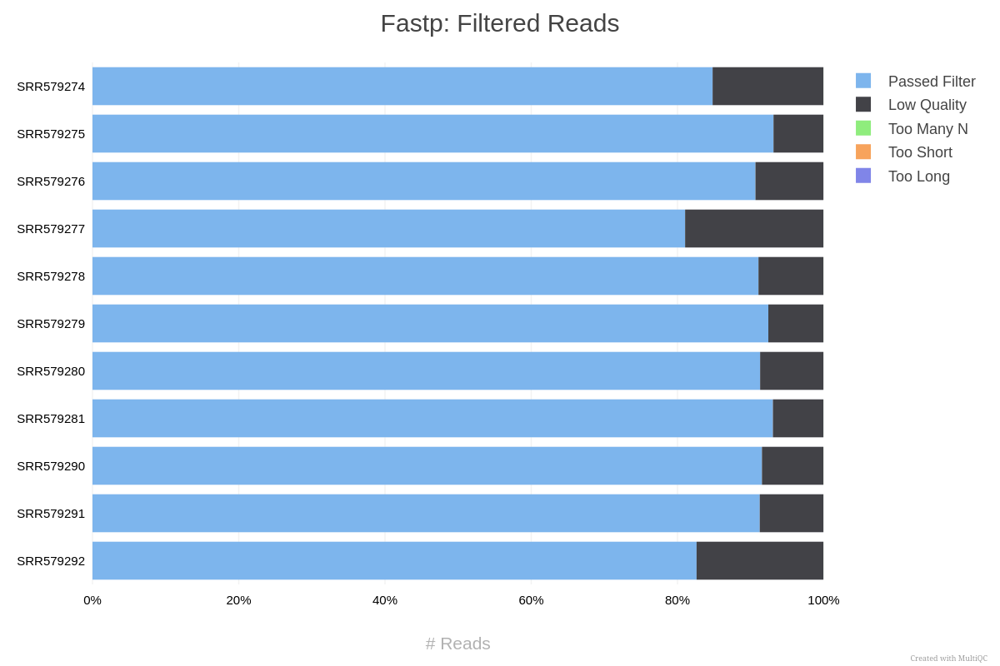
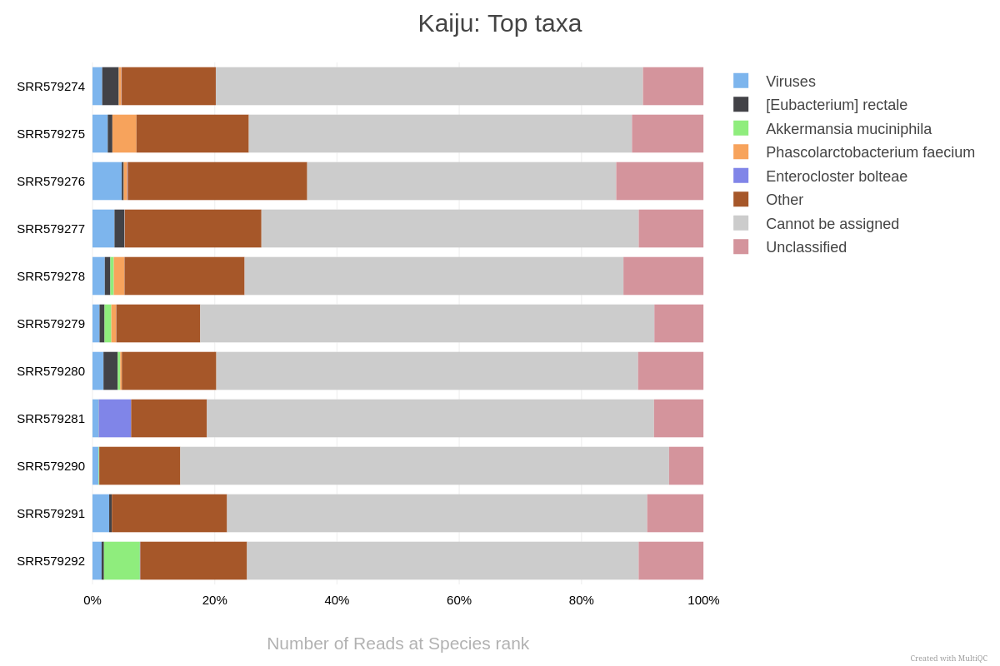
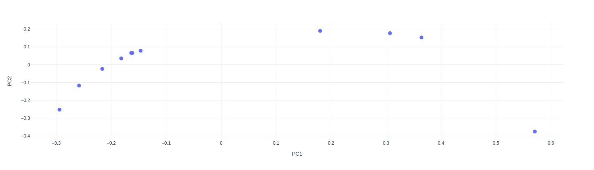

Example analysis - Crohn's disease microbiome data
To showcase the potential EURYALE has to expedite the analysis of microbiome data, let's try analysing a publicly available gut microbiome dataset (PRJNA175224). This dataset contains 7 gut microbiome samples from healthy donors and 4 from donors with Crohn's disease.
Feel free to download the original dataset to a directory called raw_data and follow along.
Acquiring databases and running the pipeline
Let's first download the databases and references. For this analysis, we'll focus on the taxonomic classification results after de-contamination. So, let's download the Human reference genome as well as Kaiju's database:
nextflow run dalmolingroup/euryale \
--download_kaiju \
--download_host \
--outdir references \
-entry download \
-profile singularity
Once that's done, let's execute the analysis on the data itself. Your samplesheet should look something like this:
sample,fastq_1,fastq_2
SRR579274,raw_data/SRR579274_1.fastq.gz,raw_data/SRR579274_2.fastq.gz
SRR579275,raw_data/SRR579275_1.fastq.gz,raw_data/SRR579275_2.fastq.gz
SRR579276,raw_data/SRR579276_1.fastq.gz,raw_data/SRR579276_2.fastq.gz
SRR579277,raw_data/SRR579277_1.fastq.gz,raw_data/SRR579277_2.fastq.gz
SRR579278,raw_data/SRR579278_1.fastq.gz,raw_data/SRR579278_2.fastq.gz
SRR579279,raw_data/SRR579279_1.fastq.gz,raw_data/SRR579279_2.fastq.gz
SRR579280,raw_data/SRR579280_1.fastq.gz,raw_data/SRR579280_2.fastq.gz
SRR579281,raw_data/SRR579281_1.fastq.gz,raw_data/SRR579281_2.fastq.gz
SRR579290,raw_data/SRR579290_1.fastq.gz,raw_data/SRR579290_2.fastq.gz
SRR579291,raw_data/SRR579291_1.fastq.gz,raw_data/SRR579291_2.fastq.gz
SRR579292,raw_data/SRR579292_1.fastq.gz,raw_data/SRR579292_2.fastq.gz
And your command should look something like this one:
nextflow run dalmolingroup/euryale \
--input samplesheet.csv \
--outdir results \
--skip_alignment \
--skip_functional \
--kaiju_db references/kaiju_db_nr_2023-05-10.tgz \
--host_fasta references/Homo_sapiens.GRCh38.dna.primary_assembly.fa.gz \
-profile singularity \
-r "v1.0.3"
Check the parameter documentation for a full description of possible parameters.
- We're skipping the functional annotation section just to expedite the results, but feel free to include these steps in your own analysis.
Once that's all done, let's check the results we got.
Exploring the resulting data
First, let's open the MultiQC report in our browser and take a look.
It should be available in results/multiqc/multiqc_report.html.
We can first see that most reads (80%) in each sample passed the quality filter, thankfully:

We can also see that most samples did not have their reads assigned to any particular taxon:

This could be due to high host contamination, or could necessitate the use of another database, or something else entirely! Either way, it's something worth investigating. We can also see there is a strange spike of Enterocloster boltae in one of the samples, which also warrants further investigation.
If we now check the MicroView results, available in results/taxonomy/microview/microview_report.html,
we can see further points of interest to investigate in our data.
Let's see the Beta-diversity PCoA, for example:

The plot shows a somewhat strange division in the dataset: 4 samples stretch further in
the PC1 than the rest. This could be due to some biological variable or an error in the data generation process.
Either way, it's worth saving the PCoA table, available in results/taxonomy/microview/microview_tables/ and
crossing the sample names with the metadata of this study.